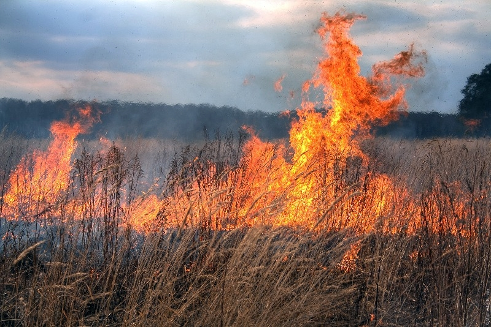

Direcția Situații Excepționale mun. Ungheni informează: pe 30 aprilie, la ora 13:00, pompierii au intervenit la lichidarea unui focar de ardere a vegetației uscate în apropierea iazului din sectorul Berești, care s-a extins pe o suprafață de 100 m p. Stimați ungheneni, nu dați foc vegetației uscate. Arderea vegetaţiei uscate provoacă multe efecte negative solului, incluisv se distruge microfauna folositoare de la suprafaţa solului. Din păcate, aceasta continuă să fie o practică des întâlnită, iar oamernii uită că arderea resturilor vegetale, precum și a vegetației uscate, are consecinţe grave asupra comunităţii prin producerea de pagube materiale şi afectarea mediului. Fiți responsabili. Este o obligaţie morală şi civică a fiecărui cetăţean să respecte regulile și să proterjeze mediul. Reamintim, totodată, că este interzisă aruncarea la întâmplare a ţigărilor, chibriturilor sau a altor obiecte aprinse, precum şi faptul că focurile în aer liber, cum sunt cele pentru arderea miriştilor, tufărişurilor, stufului sau a vegetaţiei ierboase pot degenera în incendii de proporţii cu efecte grave asupra securităţii vieţii şi a bunurilor. Cei care nu ţin cont de aceste prevederi şi produc incendii la care este necesară intervenţia pompierilor trebuie să ştie că, potrivit legii, sunt pasibili de amenzi usturătoare.
